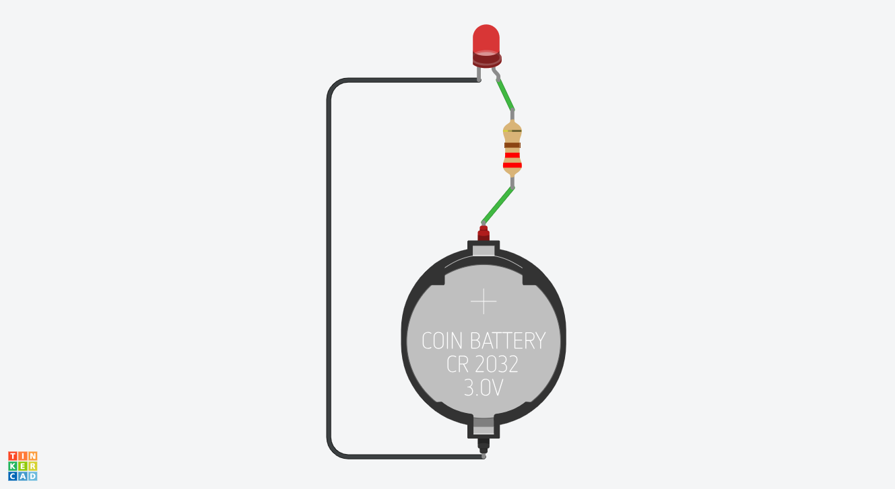
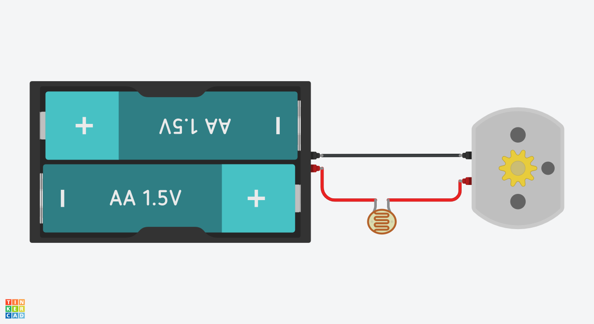
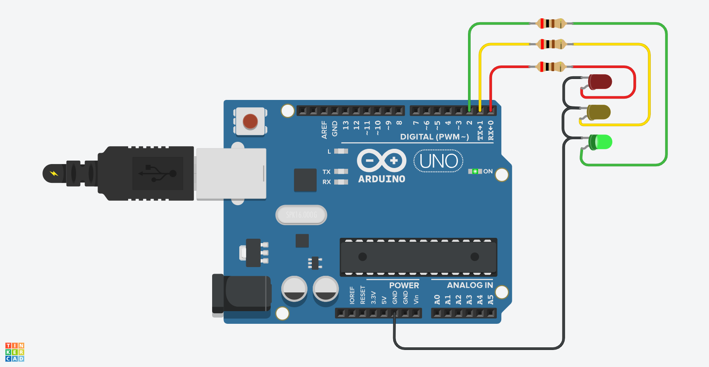
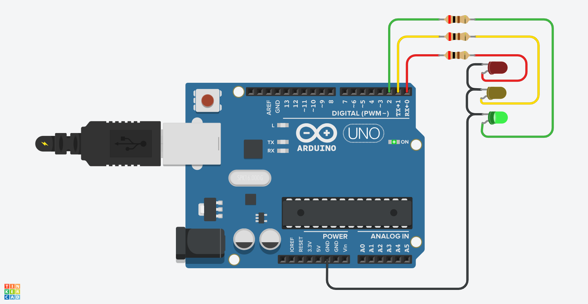
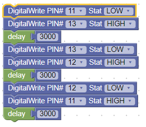
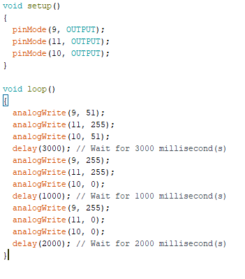
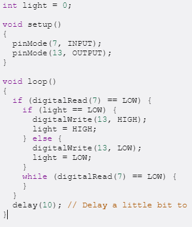
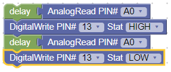
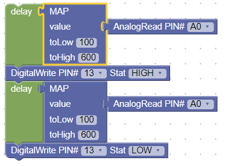
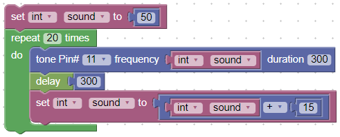

CS First: Game Design Project 1
Gaming Story Starter Project remix
We had 3 questions given to us and we each chose 1 to answer using Scratch. I chose "What is your favorite video game and why?" Add-ons: Bitmap characters and a flickering background
CS First: Game Design Project 2
Racing Game Starter Project remix
In this project we made some cars race around a track using the arrow keys and WASD keys so you can race with a friend. Add-ons: A button to change maps and trails behind the cars
CS First: Game Design Project 3
Platformer Game Starter Project remix
The goal for this game is to get to the bananas without touching the water using the WAD keys. Add-ons: Win/loss conditions and bug fix
Haunted House Project
The B Wing was making a haunted house, and this was my contribution. It's a spider with toggleable blinking LED eyes, powered by a button cell battery.
Autonomous Robot
We got kits to build Makeblock robots. They use the Makeblock code software and the Makeblock Orion microcontroller. We made ours go around a cone and back autonomously.
Ultrasonic Robot
We got kits to build Makeblock robots. They use the Makeblock code software and the Makeblock Orion microcontroller. We made ours use an ultrsonic sensor to tell if it was too close to a box, drop the ball, then return to the starting point.
BlocksCAD Starter Circuits
  

We made accounts on BlocksCAD which allows you to simulate circuits. These are the circuits we used to get started. The first is a curcuit to show the interface of the website. The second is to show how to add components - I added the photoresistor. The third was a tutorial on how to add wires and how to hook things up electronically. The last one was demonstrating you need resistors with LEDs and other components.
BlocksCAD Intermediate Circuits
.png)

Using BlocksCAD some of us used 7 segment displays to show our initials and our class computer number and a unique circuit of our own design. My circuit is an RGB LED that uses potentiometers to determine the values for the red, green, and blue.
Mirco:Bit Starter Projects
Micro:bits are small boards that have a 5x5 screen of red LEDs, two buttons, many sensors, and radio capabilities to talk to other Micro:bits. These are my five starter projects to use as a tutorial. (Top) A heart flashes on the screen. (Second) Differnt buttons display different faces on the screen. (Middle) A name tag that runs through on the screen. (Second last) Press both the 0 and ground pin at the same time, and a RNG creates a number displayed on the screen showing how much love you have. (Last) Two Micro:Bits communicate with radio.
Micro:Bit Dice Roller
I made my Micro:Bit it roll one die when you press A, two dice on button B, and flip a coin when you press A and B at the same time. If you're tired of the screen being on, then you can shake it and the screen clears.
Arduino Starter Project 1
For the next unit, we used Arduinos. There were 7 basic projects with more adavanced parts to them. Some of the advanced versions of the advanced projects satidfied the requirements for both the advanced and basic versions (Projects 3 and 5). For the first one, we had to make an LED blink as fast as possible, and for the advanced section of this project we had to see how fast we could get a light to blink before we could just barely se it blinking. We got to a 13 millisecond delay between each blink before it was too fast. The video shown is the light blinking at 13ms intervals.
{View code}Arduino Starter Project 2
 Here we had to make a stoplight with 3 lights alternating one after another for the basic (Top and left), and for the advanced (Bottom and right) we had to make the stoplight run thoriugh the colors but instead on an RGB LED
{View code for basic version}{View code for adv. version}
Arduino Starter Project 3
This had a button act as a lever: if you puched it, it turned the light on even if you let go and would only turn the light off again if you pressed the button once more.
{View code}Arduino Starter Project 4
 This project required a potentiometer to adjust the rate at which a light blinks. For the basic (Top and left), you just had to take the value of the pot and make that the amount of milliseconds delayed. For the advanced (Bottom and right), we had to make the range of milliseconds 100 to 600 and have the pot values mapped to a number in that range.
{View code} {View code}Arduino Starter Project 5
We made the speaker go up the musical scale then reset and keep doing it.
{View code}Arduino Final
An infinity gauntlet that lights up for each finger bent... in theory. Obviously it didn't work out so well.
{View code}